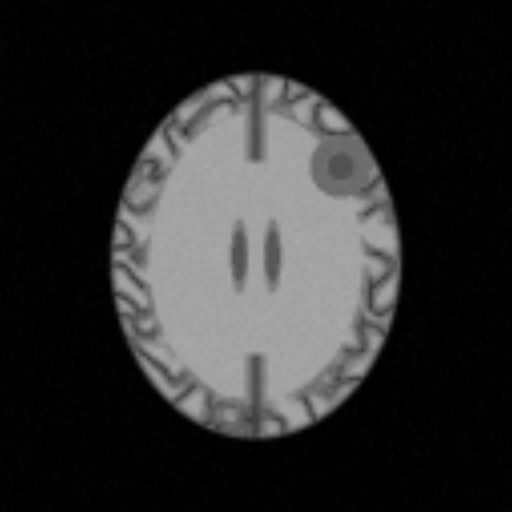

الدراسات
2 من 2 · المخزن المحلي| المريض | معرّف المريض | تاريخ الميلاد | الجنس | تاريخ الدراسة | الوصف | السلاسل | الصور | الطريقة | رقم الطلب |
|---|---|---|---|---|---|---|---|---|---|
| PHANTOM^SYNTHETIC | NMR-PHANTOM-001 | 1970-01-01 | O | 2026-01-01 | NeuroMR-PRO synthetic phantom | 15 | 1 849 | MR · 3.0 T | PHANTOM0001 |
| PHANTOM^SYNTHETIC | NMR-PHANTOM-001 | 1970-01-01 | O | 2026-07-01 | NeuroMR-PRO synthetic phantom | 1 | 32 | MR · 3.0 T | PHANTOM0002 |
السلاسل
2026-01-01 · 15 سلسلة · واحدة محددةانقر مع Ctrl أو Shift لتحديد عدة سلاسل| # | وصف السلسلة | النوع | الصور | الأبعاد | الحالة | |
|---|---|---|---|---|---|---|
 | 120 | DSC perf SNR20 | DSC | 240 | 60 dyn × 4 sl · 64² | جاهزة |
| 150 | DSC perf SNR50 | DSC | 240 | 60 dyn × 4 sl · 64² | جاهزة |
| 160 | DSC perf leakage | DSC | 160 | 40 dyn × 4 sl · 64² | جاهزة |
 | 200 | T1 DCE semiquant | DCET1 | 24 | 12 dyn × 2 sl · 48² | جاهزة |
 | 210 | T1 DCE permeability | DCET1 | 120 | 60 dyn × 2 sl · 48² | جاهزة |
| 211 | T1 FFE VFA 5deg | VFA refT1 | 2 | 2 sl · 48² · FA 5° | جاهزة | |
 | 212 | T1 FFE VFA 15deg | VFA refT1 | 2 | 2 sl · 48² · FA 15° | جاهزة |
| 306 | DTI 6dir | DTIDWI | 14 | 7 vol × 2 sl · 6 dir | جاهزة | |
| 332 | DTI 32dir | DTIDWI | 66 | 33 vol × 2 sl · 32 dir | جاهزة | |
| 364 | DTI 64dir | DTIDWI | 130 | 65 vol × 2 sl · 64 dir | جاهزة | |
| 399 | DTI multishell | DTIDWI | 194 | 97 vol × 2 sl | 64 %معالجة مسبقة | |
 | 400 | DWI IVIM DKI | DWI | 24 | 12 b × 2 sl · iso | جاهزة |
| 500 | fMRI BOLD block | fMRI | 600 | 100 dyn × 6 sl · 48² | جاهزة | |
| 600 | 3D FLAIR | FLAIR | 32 | 32 sl · 64² · 1.0 mm | جاهزة | |
| 700 | MRS SVS PRESS | MRS-SVS | 1 | 2048 pts · 2000 Hz | جاهزة |